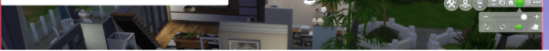
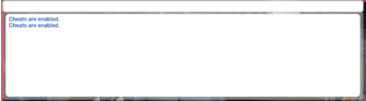
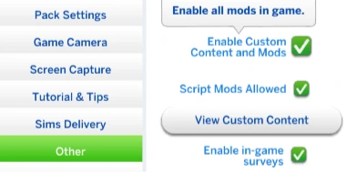

To cheat, one first needs to open the cheat console. To do this press CTRL+SHIFT+C. In the top of the left corner on the screen a white bar will appear (see image).
There are a lot of cheats, some of them can be seen on this page. To use most of them, the player has to enable testingcheats. This is done by just typing "testingcheats on" or "testingcheats true". When you press enter, a bigger, white box should appear under it. To get rid of the cheating console press CTRL+SHIFT+C again.
Downloading mods is completely different. First, you'll have to find all the mods and download them online. They should be in the "downloaded files" folder on your computer.
After the mods are downloaded, they need to placed in the "Mods" folder. To find this folder go first to "Documents", then "Electronic Arts", "The Sims 4" and the Mods folder should be there. If there isn't a mods folder, you can just make one, as long as it's in the Sims 4 folder.